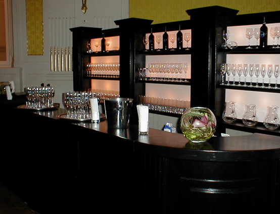
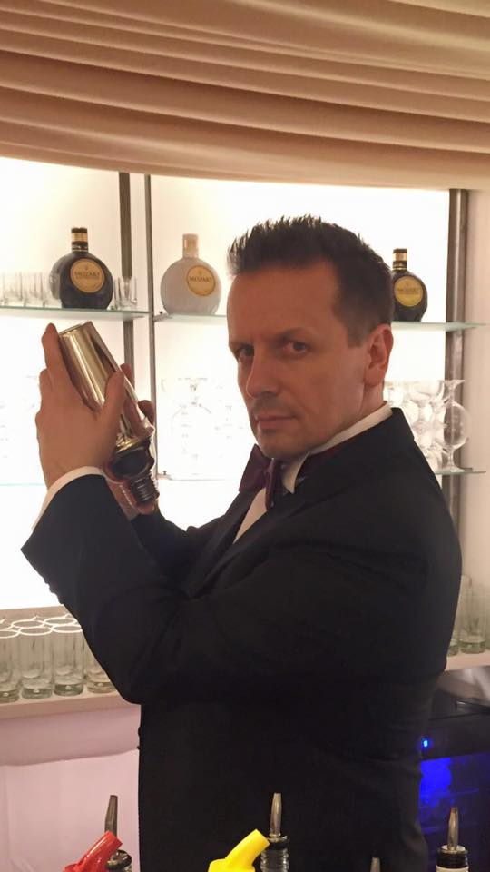
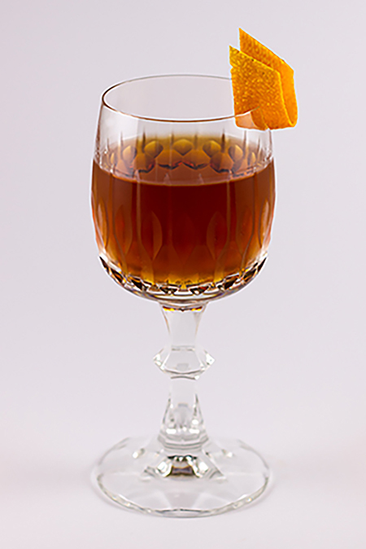

01
Anfragen
Sie schildern uns Anlass, Datum, Gästezahl und Ort — online in zwei Minuten oder telefonisch.
Ein komplettes Cocktail-Catering, das keine Wünsche offen lässt — frische Zutaten, Top-Marken und Barkeeper, die ihr Handwerk verstehen.

Vom Eiswürfel bis zur mobilen Bar: Wir bringen Bar, Technik, Team und frische Zutaten direkt zu Ihrem Event. Top-Marken-Spirituosen, frisch gepresste Säfte, Auf- und Abbau inklusive — nicht der billigste Anbieter, dafür Qualität, Charme und Feingefühl, das Ihre Gäste spüren.

Wir bringen die Bar zu Ihnen — an jede Location in Wien und ganz Österreich. Als Highlight verzaubert das Team rund um Eristoff Grand Master Tom „Iceman“ Sipos mit Flairing, Feuer-Show und Cocktail-Akrobatik. Mehrfach ausgezeichnet, ideal für Gala, Messe und Produktpräsentation.

Wir kreieren individuelle Cocktails, abgestimmt auf Ihr Event, Ihre Marke oder Ihr Motto. Ihr Signature-Drink bekommt einen eigenen Namen — dazu alkoholfreie und saisonale Varianten.
Sie schildern uns Anlass, Datum, Gästezahl und Ort — online in zwei Minuten oder telefonisch.
Wir schneidern Ihnen ein persönliches Angebot mit Cocktailauswahl, Setup und Showoptionen.
Wir bauen auf, mixen, zeigen Show und räumen wieder ab. Sie feiern — wir machen den Rest.
Sie schildern uns unkompliziert per Formular oder E-Mail an office@showbar.at Ihren Anlass, das gewünschte Datum, die Location und die ungefähre Gästezahl. Wir sind rund um die Uhr erreichbar und stellen Ihnen darauf ein passendes, individuelles Angebot zusammen.
Grundsätzlich gilt: je früher, desto besser, da gefragte Termine rasch vergeben sind. Da wir 24/7 erreichbar sind, fragen Sie auch kurzfristige Termine einfach an — wir prüfen die Verfügbarkeit und finden gemeinsam die beste Lösung für Ihren Anlass.
Wir betreuen Anlässe jeder Größe — von Geburtstagen und Hochzeiten über Bälle und Produktpräsentationen bis zu Messeauftritten. Firmen-Events realisieren wir bis 5.000 Personen, größere Veranstaltungen gerne auf Anfrage.
Unser Standort ist in der Engerthstraße 60, 1200 Wien. Wir sind in Wien, Niederösterreich und in ganz Österreich für Sie im Einsatz und kommen als mobile Bar direkt an Ihre Wunsch-Location.
Ja. Neben klassischen Cocktails gehören hochwertige alkoholfreie Drinks und Mocktails selbstverständlich zu unserem Repertoire, sodass alle Ihre Gäste bestens versorgt sind. Ihre Wünsche stimmen wir vorab individuell mit Ihnen ab.
Beim Showbarkeeping wird die Zubereitung der Drinks zur Performance: spektakuläres Flairing und Barartistik sorgen für ein echtes Highlight bei Ihrem Event. Inhaber Tom „Iceman“ Sipos ist Eristoff Grand Master und unter anderem 1. Platz Show Barkeeper of the Year sowie Global Winner 2018 Elit Art of Martini.
In unserem Barkeeper-Lehrgang geben wir über 20 Jahre Erfahrung praxisnah weiter. Die Plätze sind bewusst begrenzt (max. 7), damit wir jeden Teilnehmer individuell betreuen können. Alle Informationen und Ihre Anmeldung erhalten Sie per E-Mail an office@baracademy.at.
Ja, ein Gutschein von diecocktailbar.at ist ein besonderes Geschenk — etwa für ein Cocktail-Erlebnis oder einen Platz im Bar-Academy-Lehrgang. Kontaktieren Sie uns einfach, und wir stellen Ihren Wunschgutschein gerne aus.